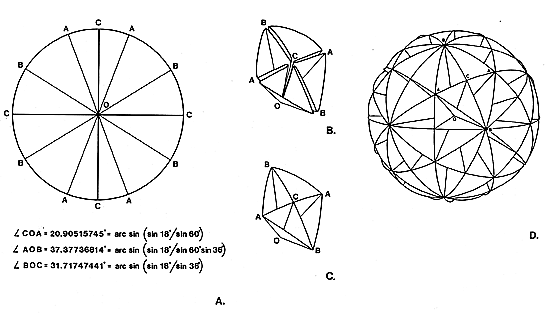

|  |
| Fig. 986.502 Thirty Great-circle Discs Foldable into Rhombic Triacontahedron System: Each of the four degree quadrants, when folded as indicated at A and B, form separate T Quanta Module tetrahedra. Orientations are indicated by letter on the great-circle assembly at D. |